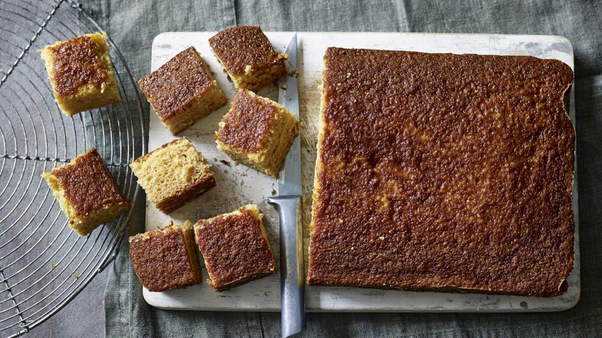

Homepage
Ginger Cake Recipe

Gingerbread in Europe originates form Torun, Poland. This recipe is an easy traybake cake. It's
sticky, sweet, and lightly spiced.
Ingredients
- 200g self raising flour
- 200g sugar
- 1 tsp ground ginger
- 1 tsp bicarbonate of soda
- 55g margarine (plus extra for greasing)
- 1 beaten egg
- 2 tbsp golden sugar
- 240ml hot water
- 1 tsp mixed spice
- 1 tsp vanilla essence
- 1/2 tsp nutmeg
Steps
- Preheat the oven to 180C/Gas 4. Grease and line the baking tin with baking paper.
- Mix the flour, sugar, ginger and bicarbonate of soda together in a bowl. Using your fingers,
rub the margarine in until the mixture resembles breadcrumbs. Add the beaten egg, syrup, mixed spice, vanilla esscence,
nutmeg, and hot water. Mix well with a wooden spoon until combined.
- Pour the mixture into the prepared tin and bake int he middle of the oven for 35-40 minutes, or until
golden brown and the top is springy to the touch. Leave to cook in the tin. Once cool, cut into squares.